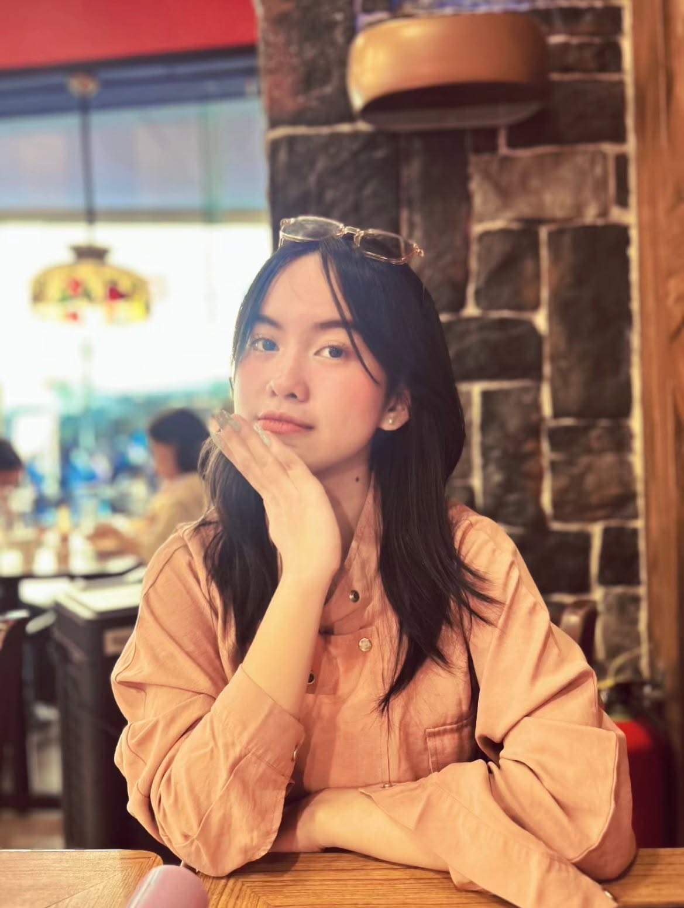

Quezon City, Philippines
Rhian Marie M. Arances
Web developer and e-commerce virtual assistant, turning curiosity about how technology solves real problems into practical, accessible software.

About
I'm an aspiring Computer Science professional currently pursuing a Bachelor of Science in Computer Science at Quezon City University. With a background as a Virtual Assistant, supporting e-commerce businesses through product management, digital marketing, content creation, and online operations, my interest in Computer Science grew from a curiosity about how technology can solve real-world problems and turn ideas into useful digital solutions.
I aspire to become a versatile, user-focused developer who creates practical, innovative, and accessible solutions that can make a meaningful impact.
Currently building on
- AWS & Cloud Computing
- Artificial Intelligence
- Software Development
Featured project
EcoMind AI
Joined a team exploring how artificial intelligence can address real-world environmental and social challenges. Our project focused on the gap between young people's awareness of climate change and their ability to take meaningful action — from research and problem identification through idea development and prototype planning.
Research, team collaboration, problem solving, ideation, prototyping, and presentation, using Zoom, Canva, and Google Workspace.
Experience
Virtual Assistant
Hometessori
April 2026 — Present
All-around Virtual Assistant handling product listings, database management, data entry, graphic design, content creation, video editing, Pinterest management, online research, community engagement, and marketing support.
Read a testimonial →Skills
Development
Java
IntelliJ IDEA
HTML & CSS
GitHub
Design
Figma
UI/UX Design
Prototyping
Productivity
Microsoft Word
Microsoft PowerPoint
Excel — data organization & analysis
Resume
Download my resume
A full copy of my education, experience, skills, and projects in one document.
- Education
- Experience
- Skills
- Projects
Last updated September 2026
Let's build something.
Open to internships, collaborations, and entry-level opportunities.